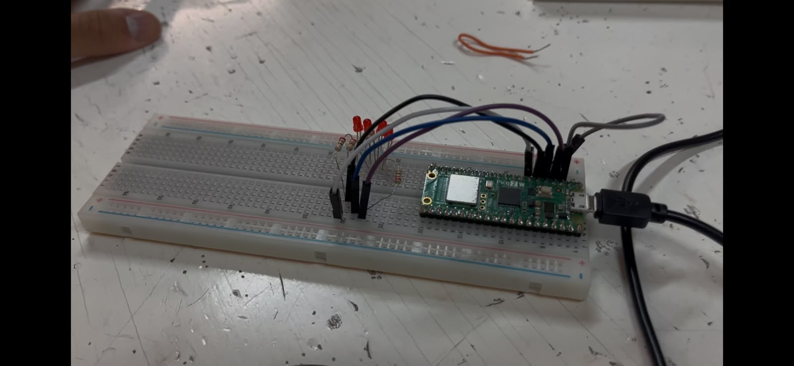

Session 2 - Using low-level SIO type instructions and bitwise operations to make a counter
Goal: Use knowledge about GPIO, memory access, and bitwise operations to drive a 4-LED array as a sequential 4-bit binary counter.
Prediction: The use of bit shifts (<<, >>) and bitmasking will be crucial, helping us visualize binary counting across sequential pins with minimal CPU overhead using direct SIO register manipulation.
Setup
- Pin map:
- Bit 0 : LED A =
GP2 - Bit 1: LED B =
GP3 - Bit 2: LED C =
GP4 - Bit 3 (MSB): LED D =
GP5 -
All LED cathodes connected to common ground through current-limiting resistors.
-
Photo:

- Non-default: None. No external measurement equipment was used; verification was conducted purely via visual output of the LED array.
What we did
- Created a new project in the VS Code Pico extension and modified the existing SIO-blink code provided in the class resources.
- Defined the 4-bit composite mask (
MASK) using bitwise OR operations acrossPIN_AthroughPIN_Dand enabled their outputs viasio_hw->gpio_oe_set. - Created a
countervariable initialized at0b0000. Inside the loop, cleared the entire mask, shiftedcounterto the base offset (PIN_A), and wrote it directly tosio_hw->gpio_set. - Handled reset conditions when
counter > 0b1111to restart the cycle at0b0000. - Compiled using the
Runbutton inside VS Code. - Verified and debugged the visual sequence in which the LEDs blinked.
Evidence
Figure: Video demonstration showing the 4-bit binary counter sequence from 0 to 15.
Predicted vs measured
| Parameter / Feature | Predicted | Observed Behavior | Status |
|---|---|---|---|
| Counting Range | 0 to 15 (0000 to 1111) |
16 sequential states displayed | Verified |
| Rollover Action | Reset to 0000 after 15 |
Resets cleanly on counter > 0b1111 |
Verified |
| Interval Time | 250 ms OFF / 250 ms ON | 500 ms total period per increment | Verified |
| Pin Alignment | GP2 (LSB) to GP5 (MSB) | Shift counter << PIN_A matches array order |
Verified |
What went wrong
- We first forgot to shift our bits to the right pin so, the bit stayed floating somewhere in the memory, when we shifted
<<. This was corrected by properly shifting the counter value to match the base offset of the GPIO pins (counter << PIN_A).
Code
const uint32_t MASK = (1u << PIN_A) | (1u << PIN_B) | (1u << PIN_C) | (1u << PIN_D);
sio_hw->gpio_oe_set = MASK;
while (true) {
sio_hw->gpio_clr = MASK;
sleep_ms(250);
sio_hw->gpio_set = counter << PIN_A;
sleep_ms(250);
counter++;
if (counter > 0b1111) {
counter = 0b0000;
}
}
Open question
- Since clearing the pins with
sio_hw->gpio_clr = MASK;followed bysleep_ms(250)produces an explicit OFF blanking interval between each count step, is there a low-level SIO instruction to update all 4 bits in a single cycle without turning off the entire array first?